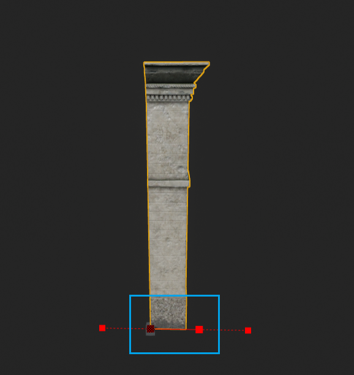
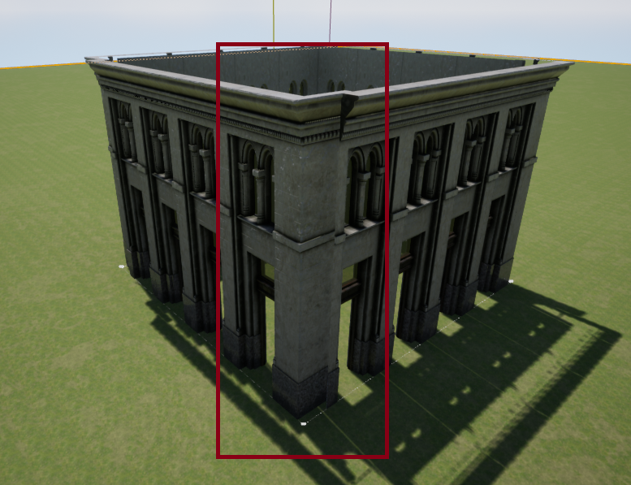

This week I worked on adding corner meshes but ran into multiple issues, so I moved on to generating multiple levels and dynamic floorplans.
I wanted to work on adding corner meshes at first to understand the corner limitations and keep it in mind while working on the floorplan. I first derived two classes from the original ModularPiece so I can add special behavior for Walls and corners (I will make more derived classes as I need them). I ran into a major issue with using spline meshes for corners (I found a solution a couple of days later just before I started writing this post and I will implement it next week). Unreal uses the meshes bounds to decide where the start poition and end position of the spline mesh will be, this works great for modular walls because they have flat sides so they can snap together. However, when I tried to use a corner with details it caused an inaccurate bounding box and therefore a wrong mesh end as pictured below. After some digging I found out there is a way to offset the mesh and I'm currently working on making an easy way for the user to do it if the mesh needs it.
 I moved on to adding the ability to have a more complex floorplan. I first wanted to make sure I can have the user add extra points to create a custom floorplan and that I would be able to handle that internally. I'm currently keeping an array of points for every level to match the spline points so I know when the user is moving a point and can snap it correctly. When a spline point is added or removed, I had to make sure to fix my array to match but also having the new point snap nicely for them.
This behavior however only works for a corner length of 0 currently. I didn't want to add any calculations to fix the corners since I didn't know how I was going to solve the corner mesh issue. There is also the other issue of having a corner length greater than 0 would mess up the width of that wall when new points are added so I'm still not sure how I'll deal with that or if I should even have the idea of having corners.
Next I worked on to adding multiple levels which required some data layout modifications but was successful. I currently have a minimun of 1 floor and a maximum of 3 floors but I might increase the maximum to 4. I also added the ability to have a different wall meshes for the different levels, however, I kept certain parameters like the segment length and corner length as general parameters that can't be modified per level. My levels can currently work with different segment lengths but I wanted to keep things simple for now until I figure out if it's useful to add more control. When new floors are added, they inherit the properties of the previous floor (including the floorplan) until their properties are modified.
I will add automatically genrating random footprints, finish placing the corner meshes, and work on my midterm progress presentation.